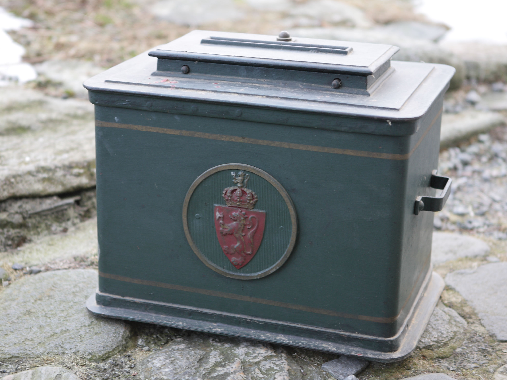

Saylov tizimlari qanday ishlaydi: majoritar, proportsional va aralash tizimlar hamda referendum
Saylov tizimi — ovozlarni mandatga (o'rinlarga) aylantiradigan qoidalar majmuasi. Ushbu betaraf ma'lumotnoma majoritar, proportsional va aralash tizimlarni, prezidentlik va parlament tizimlari farqini, referendum nima ekanini hamda erkin saylovning asosiy tamoyillarini manbalarga asoslangan faktlar bilan tushuntiradi.

Saylov tizimi — saylovchilarning ovozlarini mandatga, ya'ni parlamentdagi o'rinlar yoki lavozimlarga aylantiradigan qoidalar majmuasi. Dunyoda uchta asosiy oila mavjud: majoritar (ko'pchilik/nisbiy ko'pchilik) tizimlar, proportsional vakillik (PR) va bu ikkisini birlashtiruvchi aralash tizimlar. Tizim tanlovi ovozlar o'rinlarga qanchalik mutanosib aylanishini belgilaydi. (Manba: ACE Electoral Knowledge Network — Electoral System Design.)
Majoritar tizim: eng ko'p ovoz olgan yutadi
Eng tarqalgan majoritar usul — nisbiy ko'pchilik yoki «birinchi marraga yetgan yutadi» (First-Past-The-Post, FPTP). Har bir okrugdan bitta deputat saylanadi; eng ko'p ovoz olgan nomzod, hatto 50% dan kam bo'lsa ham, g'olib bo'ladi. Bu tizim AQSh Vakillar palatasi, Buyuk Britaniya, Kanada va Hindistonda qo'llaniladi. Afzalligi — sodda va tushunarli, aniq mahalliy vakillik beradi. Kamchiligi — natija ovozlarga nomutanosib bo'lishi va ko'p «behuda ovoz» yuzaga kelishi mumkin. (Manba: ACE; Electoral Reform Society.)
Ikki turli (runoff) tizim
Ikki turli tizimda, agar birinchi turda hech bir nomzod mutlaq ko'pchilik (50% dan ortiq) to'play olmasa, odatda eng ko'p ovoz olgan ikki nomzod o'rtasida ikkinchi tur o'tkaziladi — bu g'olibning ko'pchilik ovozga ega bo'lishini kafolatlaydi. Klassik misol — Fransiya prezidentlik saylovi. (Manba: ACE; Wikipedia — «Two-round system».)

Proportsional vakillik (PR)
Proportsional tizimda o'rinlar partiyalarning ovoz ulushiga mutanosib taqsimlanadi: taxminan 30% ovoz olgan partiya taxminan 30% o'rinni oladi. Odatda juda kichik partiyalarni chetlab o'tish uchun saylov chegarasi (bar'yer) belgilanadi — masalan, Germaniyada 5%. Ovozlarni o'rinlarga aylantirishda matematik usullar qo'llaniladi: eng yuqori o'rtacha (D'Hondt — yiriklarga biroz qulay; Sainte-Laguë — kichiklarga adolatliroq) yoki eng katta qoldiq usullari. (Manba: ACE; Electoral Reform Society — German states.)
Aralash tizimlar
Aralash tizimlar majoritar va proportsional qismlarni birlashtiradi. «Aralash mutanosib» (Mixed-Member Proportional, MMP) tizimida partiya ro'yxatidagi o'rinlar kompensatsiya tarzida beriladi, shunda umumiy natija mutanosib chiqadi — Germaniya buning klassik misoli. «Parallel» (Mixed-Member Majoritarian) tizimda esa majoritar va PR qismlar alohida hisoblanadi va o'zaro kompensatsiya qilinmaydi, shuning uchun u faqat qisman mutanosib bo'ladi. (Manba: ACE Electoral Knowledge Network.)
Prezidentlik, parlament tizimi va AQSh saylovchilar kollegiyasi
Prezidentlik tizimida ijro hokimiyati (prezident) qonun chiqaruvchi organdan alohida saylanadi; parlament tizimida esa hukumat parlamentdan shakllanadi va unga hisobdor bo'ladi. AQSh maxsus holat — prezident bevosita emas, «saylovchilar kollegiyasi» orqali saylanadi: jami 538 saylovchi ovozi bor, g'alaba uchun 270 ovoz kerak; ko'pchilik shtatlarda «g'olib hammasini oladi» qoidasi amal qiladi (Men va Nebraska bundan istisno). (Manba: AQSh Milliy arxivi — About the Electoral College.)
Referendum nima?
Referendum (plebissit) — fuqarolarning aniq bir masala, qonun yoki taklif bo'yicha to'g'ridan-to'g'ri ovoz berishi; bunda vakil saylanmaydi, balki savolning o'ziga «ha» yoki «yo'q» deyiladi. Referendumlar majburiy (qonun talab qilgan) yoki ixtiyoriy (murojaat/tashabbus bilan) bo'lishi mumkin; ba'zan ovoz berishda ishtirok bo'yicha minimal chegara (kvorum) talab qilinadi. (Manba: Encyclopaedia Britannica — «Referendum and initiative».)
Erkin saylovning asosiy tamoyillari
Ishonchli saylov umumiy va teng saylov huquqi hamda yashirin ovoz berishga tayanadi — bu YXHT (OSCE)ning 1990-yilgi Kopengagen hujjatida (7.3 va 7.4-bandlar) mustahkamlangan. Saylovni mustaqil saylov komissiyasi tashkil etadi, jarayonni esa mustaqil kuzatuvchilar — masalan, YXHT/ODIHR missiyalari — xalqaro standartlarga muvofiqligi bo'yicha baholaydi. (Manba: OSCE/ODIHR — Election Observation Handbook.)
O'zbekiston misoli
O'zbekiston — prezidentlik respublikasi; prezident umumxalq ovozi bilan yetti yil muddatga saylanadi. Parlament — ikki palatali Oliy Majlis: Senat (65 a'zo) va Qonunchilik palatasi (150 deputat), muddati besh yil. 2023-yilgi konstitutsiyaviy referendum va 2023-yil 18-dekabrda qabul qilingan Saylov kodeksi o'zgartirishlaridan so'ng Qonunchilik palatasi aralash tizimda saylanadigan bo'ldi va bu birinchi marta 2024-yil 27-oktabrdagi saylovda qo'llanildi: 75 o'rin bir mandatli okruglarda majoritar (FPTP) usulida, 75 o'rin esa yopiq partiya ro'yxatlari bo'yicha proportsional usulda taqsimlandi. Har bir partiya nomzodlari orasida ayollar uchun kvota 30% dan 40% ga oshirildi. (Manba: IFES — Uzbekistan Parliamentary and Local Elections, 2024.)
Xulosa
Saylov tizimi — bir xil ovozlardan turlicha natija chiqarishi mumkin bo'lgan qoidalar to'plami. Majoritar tizimlar sodda va aniq g'olib beradi, lekin natija nomutanosib bo'lishi mumkin; proportsional tizimlar ovoz ulushini o'rinlarga adolatliroq aylantiradi; aralash tizimlar ikkisining o'rtasida turadi. Referendum esa vakil saylash emas, balki aniq savolga to'g'ridan-to'g'ri javob berishdir.

Manbalar
- ACE Electoral Knowledge Network — Electoral System Design
- U.S. National Archives — About the Electoral College
- OSCE/ODIHR — Election Observation Handbook (6th ed.)
- Encyclopaedia Britannica — Referendum and initiative
- Electoral Reform Society — What's wrong with First Past the Post?
- IFES — Election FAQs: Uzbekistan Parliamentary and Local Elections, 27 Oct 2024